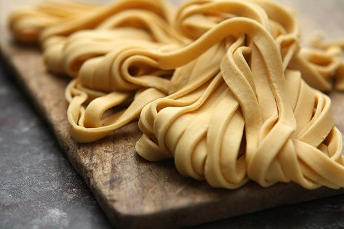

Homemade Pasta

Italian comfort food
Pasta is a type of food made from a mixture of flour, eggs
and water that is formed into different shapes and then boiled.
Spaghetti, macaroni, and noodles are types of pasta.
Ingredients
Steps
- Add flour, eggs, salt and water in a bowl
- Knead dough for 10 minutes and wrap in plastic
- Place in refridgerator for 30 minutes
- Roll dough and slice into thin sheets
- Roll through pasta roller three times until thin pasts in finished
- Cook for 2 minutes and add sauce